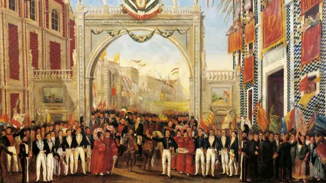

CAUSAS DE LA INDEPENDENCIA DE MEXICOLA DESIGUALDAD SOCIALLa sociedad novohispana se estructuraba bajo un sistema jerarquizado y estricto, conocido como sistema de castas, que determinaba no solo la posición social, sino también los derechos, obligaciones y oportunidades de cada individuo basándose en su origen étnico y geográfico. En la cúspide de la pirámide se encontraban los peninsulares (españoles nacidos en España), quienes, aunque minoritarios, detentaban el control absoluto de los cargos políticos más altos, como el Virreinato, la Audiencia y los altos mandos militares y eclesiásticos. Su posición de privilegio se basaba únicamente en su lugar de nacimiento. Inmediatamente debajo estaban los criollos, hijos de españoles nacidos en América. A menudo, este grupo acumulaba gran riqueza a través de la propiedad de tierras, la minería y el comercio, y contaba con acceso a educación superior. Sin embargo, se sentían profundamente frustrados y discriminados, ya que la ley y la costumbre les impedían acceder a los puestos de mayor responsabilidad política, los cuales eran reservados casi exclusivamente para los peninsulares. Esta exclusión generó un sentimiento de identidad y orgullo propio, diferenciándose cada vez más de los españoles europeos. En los niveles inferiores de la escala social se encontraba la inmensa mayoría de la población: mestizos, castas diversas (mulatos, castizos, etc.), indígenas y esclavos africanos. Los pueblos indígenas, a pesar de ser los habitantes originarios, habían sido despojados de sus tierras y sometidos a sistemas de tributo y trabajo forzado, como el repartimiento, que mantenían en la pobreza y marginación. Los esclavos, por su parte, carecian de cualquier derecho y eran considerados propiedad. Para todos estos grupos, el sistema colonial representaba una maquinaria de explotacion continua, lo que alimento un resentimiento profundo y una disposición a apoyar cualquier cambio que prometiera una mejora en sus condiciones de vida |
 |
|
|---|---|---|
La economía de la Nueva España estaba diseñada no para su propio desarrollo, sino para beneficiar a la metrópoli española, siguiendo los lineamientos del mercantilismo. España impuso un estricto monopolio comercial que obligaba a la colonia a comerciar casi exclusivamente con puertos españoles, a través de flotas reguladas. Esto significaba que la Nueva España no podía vender sus productos al mejor postor ni comprar manufacturas de otras naciones, sino que estaba atada a precios y condiciones dictadas por España. Las consecuencias fueron multiples: se impedía el desarrollo de una industria local fuerte, ya que cualquier producción que pudiera competir con la española era limitada o prohibida; los productos se encarecían considerablemente debido a los altos impuestos (como la alcabala) y los costos del transporte; y se generaba un flujo constante de riqueza hacia Europa. Gran parte de la plata extraída de minas como las de Zacatecas y Guanajuato se enviaba directamente a España para financiar las constantes guerras que el imperio español libraba en Europa, dejando a la colonia con escasos recursos para invertir en su propio progreso, infraestructura o bienestar social. Esta situación afectaba especialmente a los productores y a la élite criolla, quienes veían cómo sus ganancias eran mermadas y su capacidad de crecimiento económico bloqueada por decisiones tomadas a miles de kilómetros de distancia.
Durante el siglo XVIII, las ideas de la Ilustración comenzaron a permear en la Nueva España, especialmente entre los sectores más educados, como los criollos, los miembros del clero ilustrado y los profesionales. Esta corriente de pensamiento promovía valores fundamentales: el uso de la razón por encima de la tradición o la fe ciega, la defensa de la libertad individual, la igualdad jurídica, la soberanía popular y la separación de poderes. Estas ideas chocaban directamente con los pilares del régimen colonial, que se basaba en el absolutismo monárquico y el poder indiscutible de la Iglesia. Estas concepciones teóricas se vieron reforzadas por ejemplos prácticos y exitosos que demostraron que el cambio era posible. La Revolución Francesa (1789) no solo derrocó a una monarquía absoluta, sino que promulgó la Declaración de los Derechos del Hombre y del Ciudadano, ofreciendo un nuevo modelo de sociedad basado en la igualdad. Por otro lado, la independencia de las Trece Colonias de América del Norte (Estados Unidos, 1776) tuvo un impacto aún más directo: demostró que una colonia americana, organizada y decidida, era capaz de vencer militarmente a una potencia europea y establecer un gobierno republicano propio y soberano. Para los líderes intelectuales de la Nueva España, estos eventos no eran solo noticias lejanas, sino referentes y pruebas de que el sistema existente podía y debía ser transformado.
Para principios del siglo XIX, el sistema colonial español mostraba signos evidentes de agotamiento y decadencia. La estructura administrativa era lenta, burocrática y corrupta, incapaz de responder con eficacia a las crecientes necesidades de una sociedad que había evolucionado y complejizado en trescientos años. La economía estaba estancada, la producción agrícola y minera mostraba signos de estancamiento y la deuda pública crecía. Además, la posición internacional de España se había debilitado enormemente. Sus constantes conflictos en Europa, especialmente contra Francia e Inglaterra, consumían recursos y hombres, dejando a la monarquía con escasa capacidad para defender o administrar eficazmente sus territorios de ultramar. Esta debilidad estructural creó un vacío de poder y autoridad moral. Cuando la autoridad del rey y su capacidad para hacer cumplir la ley se mostraron frágiles, el descontento que había estado latente durante décadas encontró la oportunidad perfecta para manifestarse abiertamente. El sistema colonial, que alguna vez pareció inamovible, se reveló como una estructura vulnerable ante cualquier crisis mayor.
A lo largo de tres siglos, la Nueva España no solo creció económicamente, sino que también forjó una identidad cultural y social distinta a la de España. Los habitantes del territorio, incluso aquellos de ascendencia española, habían desarrollado un fuerte sentido de pertenencia a la tierra que los vio nacer. Se sentían americanos antes que españoles, con una realidad, costumbres y problemas específicos que diferían de los de la península. Esta identidad se tradujo en un creciente deseo de autonomía política. Muchos habitantes, liderados por los criollos que ocupaban cargos medios en la administración y el ejército, consideraban que el gobierno desde Madrid era lejano, desconocedor de la realidad local y, a menudo, incompetente para resolver los problemas específicos de la región. Existía la demanda de poder elegir a las autoridades locales y regionales, de que las leyes se adaptaran a las circunstancias particulares de la Nueva España y de tener voz en la toma de decisiones que afectaban su vida diaria. El sentimiento de que "los de allá" no entendían ni se preocupaban por "los de acá" se generalizó, convirtiendo el deseo de autogobierno en una causa unificadora que trascendió las divisiones internas y fue fundamental para justificar la ruptura con la metrópoli.